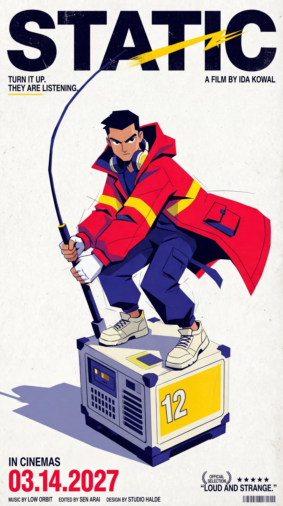
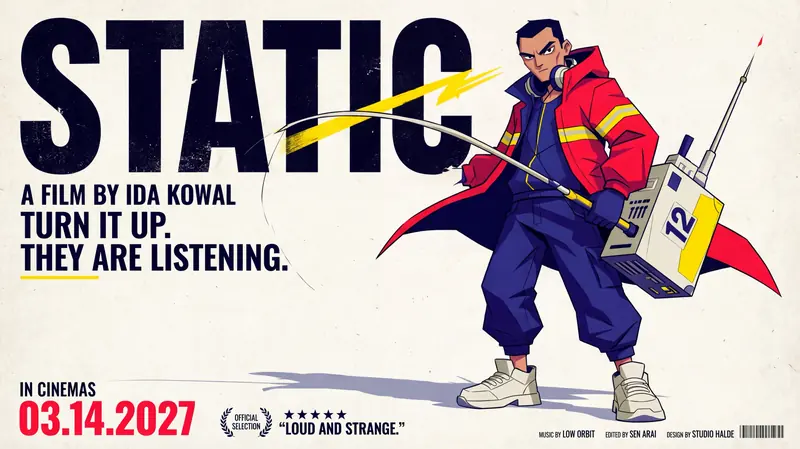
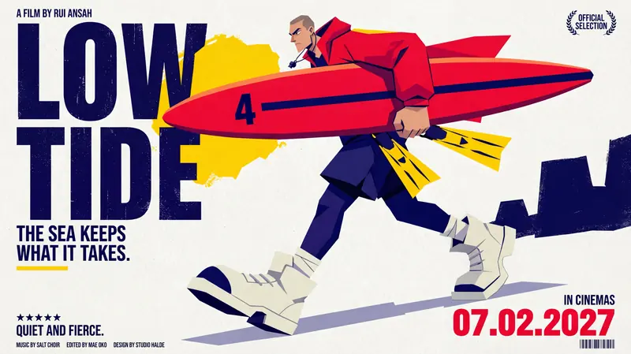
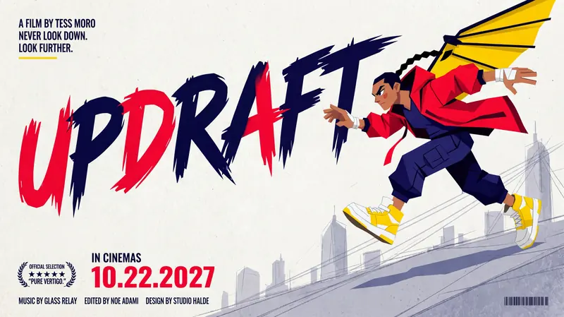
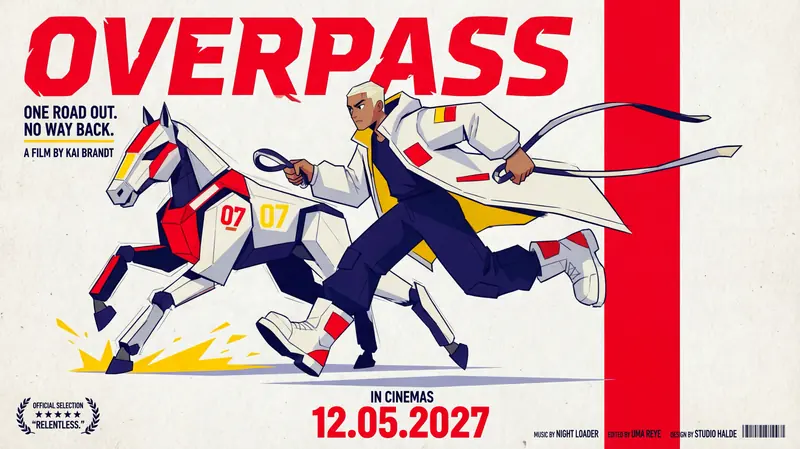

Type Posters · AI image style prompt
Paper Premiere
Fictional animated-film posters with cut-paper adult characters in oversized streetwear, a fixed paper-indigo-red-yolk palette, distressed display titles and a full movie-poster credit layer.

4 example cases
Same style.json, different subjects. Each case's values are in the examples section of the JSON.




What this style does
Fictional animated-film posters on off-white paper: original adult characters built from hard-edged cut-paper blocks, angular like papercraft, in oversized streetwear coats with one crisp cast shadow on the ground. A fixed four-colour palette (paper white, deep indigo, signal red, yolk yellow). Each case gets its own distressed display title (ultra-bold wide sans with yellow lightning scratches, ultra-tall condensed type half-covered by a yellow block, jagged shard-brush lettering, slanted tech face with knife-cut notches), plus a full movie-poster information layer: two-line tagline, director credit, laurels, five-star pull quote, release date, billing-block credits and a barcode.
Signature traits
- Fictional animated-feature film poster on one off-white paper ground with fine grain; the ground stays 35-45% empty and never becomes a scene or a photo.
- Original adult characters built from large sharp polygonal shards of flat colour like cut paper: pointed splintered edges, exaggerated proportions (small head, huge coat, huge footwear), simplified faces with small sharp eyes, long hanging straps; no black line art; a few thin loose pencil construction lines and colour slivers sit slightly offset from the shapes.
- Two-tone hard light, low dramatic camera angle and one crisp flat cast shadow thrown across the paper ground; no soft gradients, no glow, no outlines around the colour planes.
- Fixed four-colour palette that all appears in every poster: paper off-white, deep indigo ink, signal crimson, yolk yellow. One large flat graphic block (slash, paint shape, skyline wash or vertical bar) sits behind the hero.
- One short film title as enormous distressed display lettering, partly covered by the hero or by the graphic block. The lettering style is designed per case (ultra-heavy wide grotesk with a yellow slash, tall condensed capitals half painted over, jagged shard brush capitals, wide slanted techno capitals with knife cuts) and never repeats inside the series.
- Film-poster information layer in small condensed capitals: two-line tagline, 'A FILM BY' line, laurel wreath with 'OFFICIAL SELECTION', five stars with a short press quote, 'IN CINEMAS' with a large numeric date, one row of small credits, one plain barcode strip.
style.json
{
"schema_version": "2.2",
"style_name": "Paper Premiere",
"style_slug": "paper-premiere",
"style_summary": "Fictional animated-film posters on off-white paper: original adult characters built from hard-edged cut-paper blocks, angular like papercraft, in oversized streetwear coats with one crisp cast shadow on the ground. A fixed four-colour palette (paper white, deep indigo, signal red, yolk yellow). Each case gets its own distressed display title (ultra-bold wide sans with yellow lightning scratches, ultra-tall condensed type half-covered by a yellow block, jagged shard-brush lettering, slanted tech face with knife-cut notches), plus a full movie-poster information layer: two-line tagline, director credit, laurels, five-star pull quote, release date, billing-block credits and a barcode.",
"category": "Type Posters",
"style_version": "1.0",
"environment_variables": {
"ASPECT_RATIO": "9:16 or 16:9",
"STYLE_FIDELITY_ANCHORS": "Runtime shared CORE and FLEX rules",
"SOURCE_CONTENT_TO_AVOID": "Runtime exclusions from all four references",
"SUBJECT": "Original adult character and hero prop",
"SUBJECT_ACTION": "Action and pose",
"MAIN_TEXT": "Exact short film title",
"DESIGN_DIRECTION": "Placement of title, hero and information layer with landscape adaptation, title lettering style, graphic block, exact secondary text"
},
"style_fidelity_anchors": [
"[CORE] Fictional animated-feature film poster on one off-white paper ground with fine grain; the ground stays 35-45% empty and never becomes a scene or a photo.",
"[CORE] Original adult characters built from large sharp polygonal shards of flat colour like cut paper: pointed splintered edges, exaggerated proportions (small head, huge coat, huge footwear), simplified faces with small sharp eyes, long hanging straps; no black line art; a few thin loose pencil construction lines and colour slivers sit slightly offset from the shapes.",
"[CORE] Two-tone hard light, low dramatic camera angle and one crisp flat cast shadow thrown across the paper ground; no soft gradients, no glow, no outlines around the colour planes.",
"[CORE] Fixed four-colour palette that all appears in every poster: paper off-white, deep indigo ink, signal crimson, yolk yellow. One large flat graphic block (slash, paint shape, skyline wash or vertical bar) sits behind the hero.",
"[CORE] One short film title as enormous distressed display lettering, partly covered by the hero or by the graphic block. The lettering style is designed per case (ultra-heavy wide grotesk with a yellow slash, tall condensed capitals half painted over, jagged shard brush capitals, wide slanted techno capitals with knife cuts) and never repeats inside the series.",
"[CORE] Film-poster information layer in small condensed capitals: two-line tagline, 'A FILM BY' line, laurel wreath with 'OFFICIAL SELECTION', five stars with a short press quote, 'IN CINEMAS' with a large numeric date, one row of small credits, one plain barcode strip.",
"[FLEX] Character, prop, action, title lettering, graphic block and title position change per case while paper ground, plane-built rendering, palette and information layer stay fixed.",
"[FLEX] Landscape versions are recomposed natively with the same character and title, never cropped from the vertical."
],
"source_content_to_avoid": [
"All source titles, names and marks: DRIFTING, GRODS, REVERB PROTOCOL, RE:IGNITION, ECL, Nova Katsu, Neo Katsuhiro, every credited name, festival name, date, website and hashtag in the references.",
"Real trademarks seen in the references: IMAX, Dolby, Panavision, 4DX, the PG-13 and NR rating boxes; no real studio, cinema-format or rating logo of any kind.",
"R1 pairing of a seated rider in an orange coat leaning on a white futuristic motorcycle with a teal windscreen and the number 38.",
"R2 pairing of a bob-haired girl with an eye patch holding a rifle beside a red silhouette figure and yellow palm trees.",
"R3 pairing of three hooded figures standing in a row in front of pale skyscrapers under a shard title.",
"R4 pairing of two figures back to back in white coats with firearms beside a white motorcycle and a red vertical bar; no revealing outfits.",
"No firearms or weapons, no motorcycles, no existing film, anime or game characters, no signatures or creator handles."
],
"visual_deconstruction": {
"genre": "Fictional animated-feature film poster.",
"energy": {
"density": "55-65% active surface; paper keeps 35-45% empty.",
"layering": "Paper ground, graphic block, title, hero with prop, information layer.",
"disorder": "Print wear on the title, loose sketch lines and shard edges; colour planes stay flat and clean.",
"tension": "Giant title partly hidden by a hero caught in a steep diagonal action, one hard cast shadow, small precise credits against huge letters."
},
"fusion": {
"genre": "All four: festival-style poster for an invented stylised animated film; every title, name and character replaced.",
"palette": "R1 bone paper with near-black title and yellow slash; R2 indigo, yellow and red on white; R3 crimson and violet-indigo shards; R4 crimson title and bar with yellow shards.",
"finish": "R2 and R3 flat angular cut-paper colour planes with loose sketch lines + R1 and R4 hard studio light with a crisp cast shadow and decal-numbered machines.",
"type": "R1 ultra-heavy worn grotesk with a brush slash; R2 tall condensed capitals painted over by a colour shape; R3 jagged shard brush lettering; R4 wide slanted capitals with cuts; small condensed credits from all four.",
"layout": "R1 full-width title over a centred hero with shadow; R2 hero overlapping the title on a diagonal; R3 title floating over a pale city wash; R4 vertical colour bar behind the hero.",
"secondary": "Laurel wreath, star rating with press quote, tagline, 'a film by' line, big release date, credit row and barcode found across all four.",
"balance": "R1 25%, R2 25%, R3 25%, R4 25%."
},
"grammar": [
"Flat angular colour planes, loose sketch lines, hard cast shadow",
"Paper ground, indigo ink, crimson, yolk yellow",
"Huge worn title plus small precise film credits"
],
"signature": {
"R1": "Seated rider leaning on a numbered white motorcycle replaced by a radio pirate crouched on a transmitter rig.",
"R2": "Girl with a rifle beside a red silhouette and palms replaced by a lifeguard striding with a long rescue board.",
"R3": "Three hooded figures standing in a row replaced by one rooftop runner mid-leap with a glider wing.",
"R4": "Two armed figures back to back with a motorcycle replaced by a freight handler sprinting beside a four-legged cargo robot."
},
"series_constants": "Off-white paper ground, plane-built adult characters in oversized streetwear, hard cast shadow, four-colour palette, film-poster information layer. Title lettering and graphic block rotate per case."
},
"composition": {
"ratio_pair": "9:16 / 16:9, generate natively",
"structure": "Hero plus prop occupy 40-55% in a diagonal action; title occupies 20-30% and is partly covered by the hero; information layer sits in the margins.",
"placement": "Full-width top / upper-left stack / slanted centre / lower third."
},
"typography": {
"class": "Distressed display lettering designed per case; four different lettering styles in one series.",
"primary": "Only MAIN_TEXT is huge; spell exactly.",
"texture": "Letterpress wear, scrapes, shard strokes or knife cuts on the title; small bold condensed sans capitals for the information layer; never a signature tag."
},
"color_palette": {
"ground": "paper off-white #EEEAE2",
"ink": "deep indigo #262048",
"accent": "signal crimson #E2334A",
"highlight": "yolk yellow #F5C52B"
},
"image_treatment": {
"base": "Flat hard-edged angular colour planes with a few loose sketch lines; stylised animated-feature look, not photographic.",
"local_effects": "Fine paper grain and print wear on the title only; no gradients, glow or halftone.",
"light": "Two-tone hard light with one crisp flat cast shadow."
},
"design_rules": [
"All four palette colours are clearly visible in every sample.",
"Characters are original fully clothed adults caught in a diagonal action, never a calm centred pose.",
"Title lettering and graphic block are different in each case and the hero partly covers the title.",
"Every sample shows contributions from all four references.",
"No real studio, cinema-format or rating logos."
],
"do": [
"Keep the paper ground mostly empty.",
"Give each case a different prop, action, lettering style and graphic block.",
"Check every text element enlarged for spelling and duplicates."
],
"avoid": [
"Motorcycles, firearms and any source character.",
"Real trademarks such as cinema-format or rating logos.",
"Soft gradients, neon glow, extra colours, calm standing poses."
],
"prompt_template": "Create one full-bleed {ASPECT_RATIO} poster for a fictional animated feature film in the Paper Premiere style.\nRender: flat hard-edged angular colour planes like cut paper, a few loose sketch lines, two-tone hard light, one crisp cast shadow.\nGround: off-white paper with fine grain, mostly empty.\nSubject: {SUBJECT}\nAction: {SUBJECT_ACTION}\nComposition, lettering style, graphic block and secondary text: {DESIGN_DIRECTION}\nTitle, exact: \"{MAIN_TEXT}\", spelled letter by letter, enormous distressed display lettering in the case's own style, partly covered by the hero.\nPalette: paper off-white, deep indigo, signal crimson, yolk yellow; all four visible.\nInformation layer: two-line tagline, 'A FILM BY' line, laurel with OFFICIAL SELECTION, five stars with press quote, IN CINEMAS with large date, one credit row, one barcode; each exactly once.\n{STYLE_FIDELITY_ANCHORS}\nExclude: {SOURCE_CONTENT_TO_AVOID}",
"negative_prompt": "Existing film, anime or game characters, motorcycles, firearms, weapons, real studio logos, cinema-format logos, rating boxes, websites, hashtags, Japanese text, revealing outfits, children, soft gradients, neon glow, halftone, 3D photoreal render, photo, extra colours, calm standing pose, tiny title, misspelled text, duplicated text elements, signature, creator handle, watermark.",
"examples": [
{
"case_name": "signal-pirate",
"values": {
"MAIN_TEXT": "STATIC",
"SUBJECT": "An original adult radio pirate with cropped dark hair and big headphones around the neck, wearing an oversized signal crimson parka with deep indigo lining and yolk yellow reflective bands, baggy indigo trousers and chunky off-white sneakers; a boxy off-white portable transmitter rig with a tall whip antenna, yolk yellow side panels and a large number 12 decal.",
"SUBJECT_ACTION": "The pirate stands astride the transmitter rig in a deep lunge, hauling the tall antenna that is fixed to the rig with both gloved hands like a fishing rod so it bends in one huge arc, the parka flaring out wide like wings, straps flying; seen from below, a hard stare down at the viewer.",
"DESIGN_DIRECTION": "STATIC in one line across the full width in the upper third; the lunging pirate and rig fill the lower two thirds and lean to the right, the pirate's head and the bent antenna overlapping the bottom of the title, the flaring parka cropped by the right edge, the cast shadow stretching to the lower left; tagline at the left directly under the title; 'A FILM BY' line at the right under the title; date block at the lower left; laurel and press quote side by side at the lower right; credits row and barcode along the bottom edge. Landscape: STATIC in one line across the upper left two thirds; the lunging pirate and rig fill the right third from top to bottom, the parka cropped by the right edge, the antenna bending left in a huge arc over the title, the cast shadow stretching left; tagline under the title at the left; date block at the lower left; laurel and press quote in a row at the lower centre; credits row and barcode along the bottom edge. Type: ultra-heavy wide grotesk capitals in deep indigo ink, almost black, with rough letterpress wear and small chips, tightly spaced. Graphic block: one yolk yellow dry-brush lightning slash cutting diagonally through the last letters of the title. Tagline 'TURN IT UP. / THEY ARE LISTENING.', 'A FILM BY IDA KOWAL', quote 'LOUD AND STRANGE.', date '03.14.2027', credits 'MUSIC BY LOW ORBIT EDITED BY SEN ARAI DESIGN BY STUDIO HALDE'."
}
},
{
"case_name": "rescue-line",
"values": {
"MAIN_TEXT": "LOW TIDE",
"SUBJECT": "An original adult lifeguard with a shaved head and a whistle on a cord, wearing an oversized signal crimson windbreaker, deep indigo shorts over leggings, yolk yellow swim fins hanging from the belt and off-white wrapped ankles; a very long signal crimson rescue board with an indigo stripe and a number 4.",
"SUBJECT_ACTION": "The lifeguard strides hard into the wind on a steep diagonal, body leaning forward, the long board clamped under one arm so it crosses the whole poster like a blade, jacket and straps whipping behind; jaw set, eyes narrowed.",
"DESIGN_DIRECTION": "LOW TIDE in two stacked lines at the upper left filling two thirds of the width, the yellow paint shape covering its right half; the lifeguard strides from lower left to upper right through the centre, head overlapping the title, the board running from the bottom left corner past the right edge; indigo breakwater blocks at the right edge; tagline under the title at the left; laurel at the upper right; date block at the lower right; press quote at the lower left; 'A FILM BY' line, credits row and barcode along the bottom edge. Landscape: LOW TIDE in two stacked lines at the left filling the left half, the yellow paint shape covering its right half; the lifeguard strides at the centre right leaning left, the board running across the full width under the title and past both side edges; indigo breakwater blocks at the far right; tagline under the title; laurel at the upper right; date block at the lower right; press quote at the lower left; credits row and barcode along the bottom edge. Type: very tall heavy condensed capitals in deep indigo ink with scratched and scraped print wear, tightly packed. Graphic block: one large flat yolk yellow paint shape with a torn edge covering half of the title, plus a few rough deep indigo breakwater blocks at one side. Tagline 'THE SEA KEEPS / WHAT IT TAKES.', 'A FILM BY RUI ANSAH', quote 'QUIET AND FIERCE.', date '07.02.2027', credits 'MUSIC BY SALT CHOIR EDITED BY MAE OKO DESIGN BY STUDIO HALDE'."
}
},
{
"case_name": "roof-line",
"values": {
"MAIN_TEXT": "UPDRAFT",
"SUBJECT": "An original adult rooftop runner with a long black braid, wearing an angular hooded signal crimson cape-jacket with long hanging straps, baggy deep indigo trousers, off-white taped wrists and chunky plain off-white and yolk yellow high-top sneakers with no logos and no swoosh marks; a yolk yellow folding glider wing with indigo ribs strapped to one arm.",
"SUBJECT_ACTION": "The runner is frozen at the top of a huge leap, legs split wide, one arm thrown forward and the glider wing snapping half open behind, braid and straps streaming, sneakers toward the viewer; fierce focused face.",
"DESIGN_DIRECTION": "UPDRAFT in one line slanting upward across the full width just above the centre; the runner leaps over the title from lower left to upper right, sneakers overlapping the first letters, the glider wing cropped by the top edge; the pale tower wash fills the lower half behind; a small cast shadow far below at the bottom; 'A FILM BY' line and tagline stacked at the upper left; laurel at the left edge below the title; press quote at the lower left; date block at the lower right; credits row and barcode along the bottom edge. Landscape: UPDRAFT in one line slanting upward across the left two thirds; the runner leaps at the right third, body stretched from the bottom edge to the top edge, the glider wing cropped by the top right corner, one sneaker overlapping the last letter; the pale tower wash along the bottom; tagline at the upper left; laurel and press quote at the lower left; date block at the lower centre; credits row and barcode along the bottom edge. Type: jagged hand-cut shard brush capitals made of sharp angular strokes, alternating signal crimson and deep indigo strokes with thin off-white slivers between them. Graphic block: a pale indigo-grey wash of faded faceted tower silhouettes rising behind, with thin diagonal cable lines. Tagline 'NEVER LOOK DOWN. / LOOK FURTHER.', 'A FILM BY TESS MORO', quote 'PURE VERTIGO.', date '10.22.2027', credits 'MUSIC BY GLASS RELAY EDITED BY NOE ADAMI DESIGN BY STUDIO HALDE'."
}
},
{
"case_name": "night-freight",
"values": {
"MAIN_TEXT": "OVERPASS",
"SUBJECT": "An original adult freight handler with cropped bleached hair, wearing a huge off-white parka with signal crimson patches and yolk yellow lining, deep indigo trousers and off-white boots with crimson tabs; a four-legged cargo robot built like a faceted mechanical horse with a wedge-shaped head, off-white panels, signal crimson and yolk yellow decals, a large number 07 on its flank and a yolk yellow visor strip.",
"SUBJECT_ACTION": "The handler sprints flat out beside the galloping robot with both feet off the ground in a huge stride, one fist wrapped in its tow strap, parka blown open like a sail, the robot at full gallop with its legs stretched kicking up sharp yolk yellow shards of dust; both lean hard forward.",
"DESIGN_DIRECTION": "OVERPASS in one line across the full width in the lower third; the handler and robot are huge and fill the upper two thirds, charging from upper right toward lower left, the robot's front hooves overlapping the title, its tail and the parka cropped by the right edge; the crimson vertical bar stands behind them right of centre; tagline and 'A FILM BY' line stacked at the upper left; laurel and press quote stacked at the left edge in the middle; date block at the bottom centre under the title; credits row and barcode along the bottom edge. Landscape: OVERPASS in one line across the full width along the top; the handler and robot charge from right to left across the centre, the robot's head overlapping the bottom of the title, the parka cropped by the right edge; the crimson vertical bar stands behind them at the right third; tagline under the title at the left; laurel and press quote at the lower left; date block at the lower centre; credits row and barcode along the bottom edge. Type: wide forward-slanted techno capitals in signal crimson with straight knife-cut gaps through the letters and chipped corners. Graphic block: one tall signal crimson vertical bar running from the top edge to the bottom edge behind the hero, plus sharp yolk yellow dust shards. Tagline 'ONE ROAD OUT. / NO WAY BACK.', 'A FILM BY KAI BRANDT', quote 'RELENTLESS.', date '12.05.2027', credits 'MUSIC BY NIGHT LOADER EDITED BY UMA REYE DESIGN BY STUDIO HALDE'."
}
}
]
}